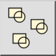

Bloka atsauču atcelšana
Rīkjosla / ikona:


Izvēlne: Bloķēt > Bloka atsauču atcelšana
Īsais ceļvedis: B, X
Komandas: blockdeselect | deselectblock | bx
Rīkjosla / ikona:


Šis rīks noņem atlasi visām tā bloka atsaucēm, kas pašlaik atlasīts bloku sarakstā.